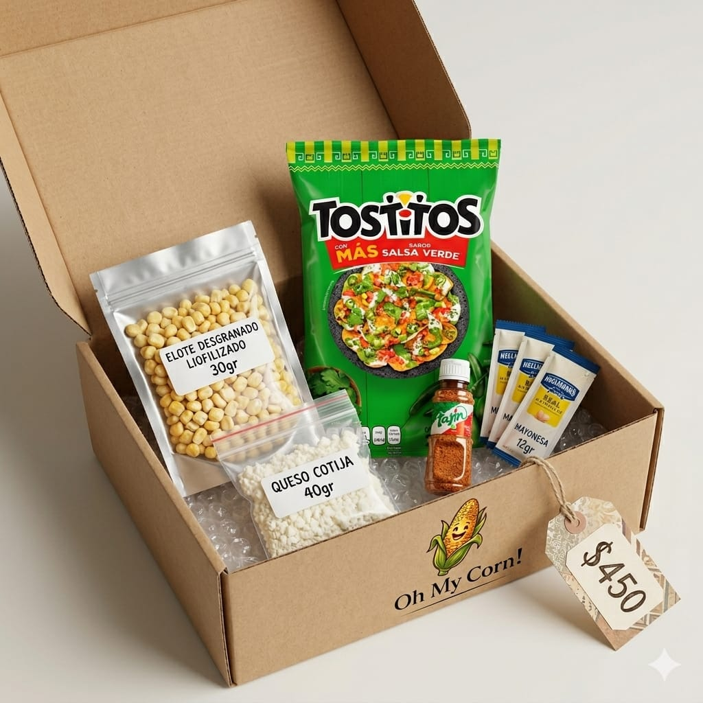
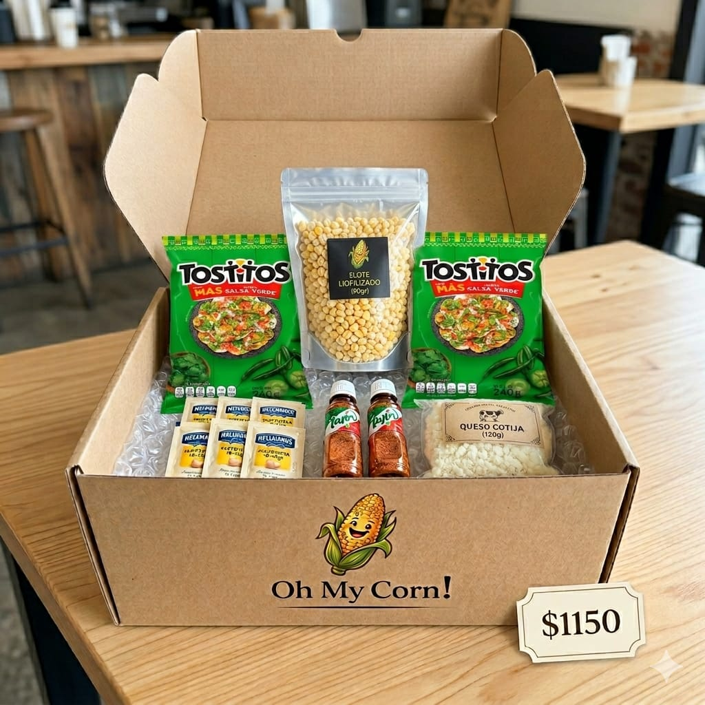
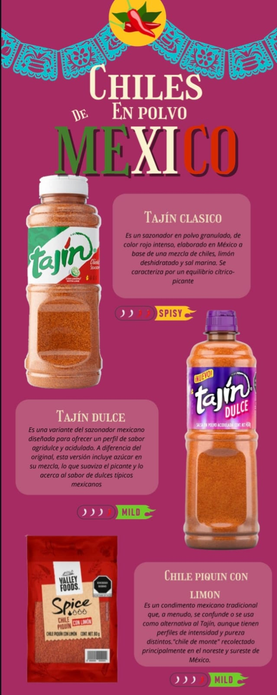

Presentamos el primer elote liofilizado diseñado para cruzar fronteras sin complicaciones.
CONOCE LOS KITSNuestra historia nace de Don Pepe, un hombre que pasó 35 años persiguiendo el sueño americano. En tres décadas, solo podía volver a México cada cinco años con una frustración constante: nunca podía llevarse el sabor de su tierra, porque en la aduana se lo quitaban.
Para él, el elote era su conexión más humilde y real con México. Ese día nos cuestionamos: ¿Por qué el sabor más honesto de nuestro país tiene que terminar en una puerta de embarque?
Así nació OH MY CORN. No vendemos maíz; vendemos el boleto de regreso a casa a través del paladar.
Satisfacer el antojo de México en cada viajero, permitiendo que la cultura gastronómica de nuestro país trascienda fronteras de forma segura, innovadora y deliciosa.
Convertirnos en el souvenir gastronómico número uno de los aeropuertos de México, siendo reconocidos mundialmente por nuestra tecnología de liofilización y calidad premium.
Diseñados para turistas y mexicanos que desean llevar el sabor auténtico listo para preparar en cualquier cocina del mundo.
Kit Individual
Kit Familiar

Presentación Individual Premium

Presentación Familiar para Compartir
Sazonador granulado de color rojo intenso, elaborado en México. Mezcla perfecta de chiles, limón deshidratado y sal marina. Equilibrio cítrico-picante.
Perfil agridulce y acidulado. Incluye azúcar para suavizar el picante, evocando el sabor de los dulces típicos mexicanos. ¡Ideal para paladares suaves!
El auténtico "chile de monte" del noreste y sureste de México. Un condimento tradicional con alta pureza e intensidad para los amantes de lo real.
